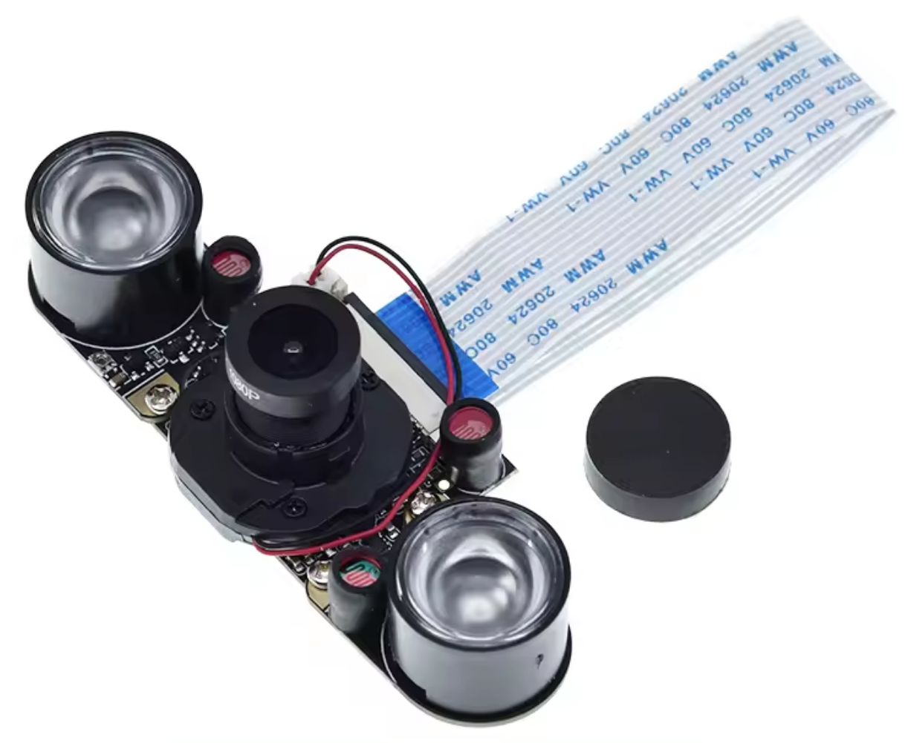
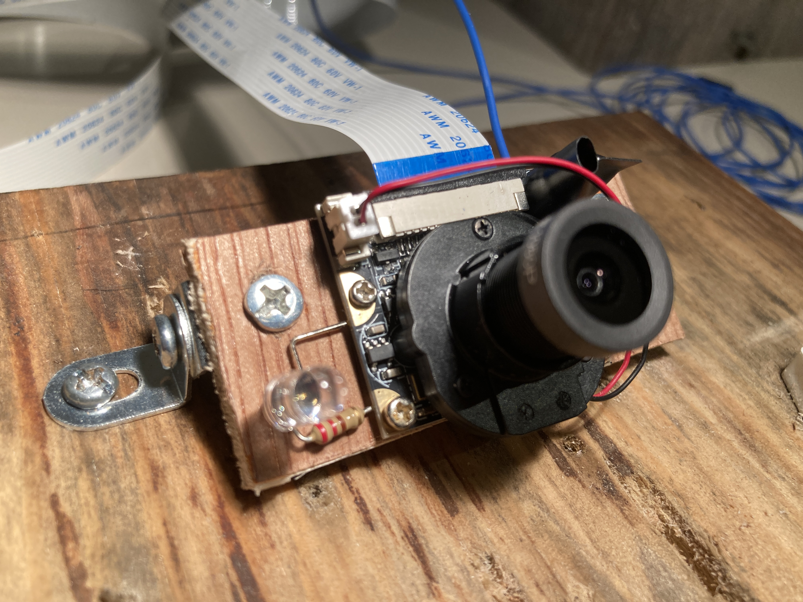
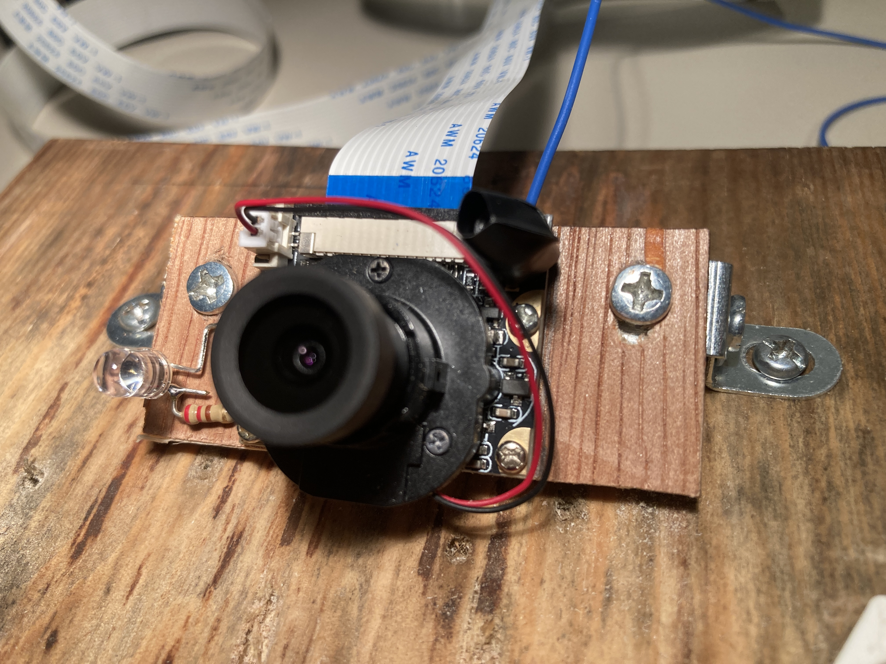
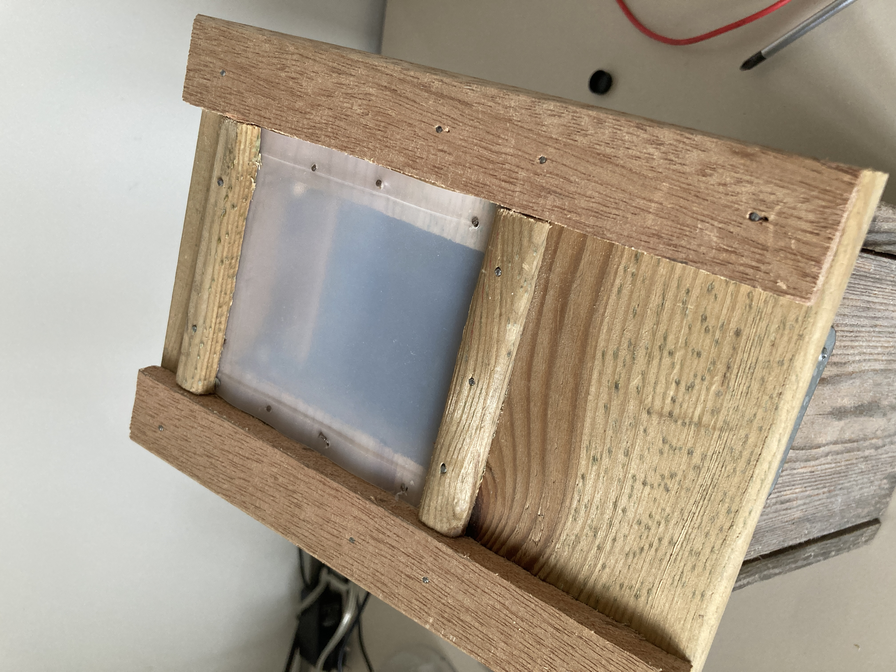
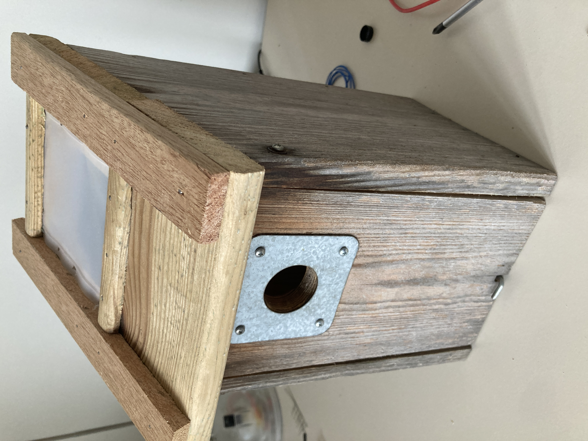
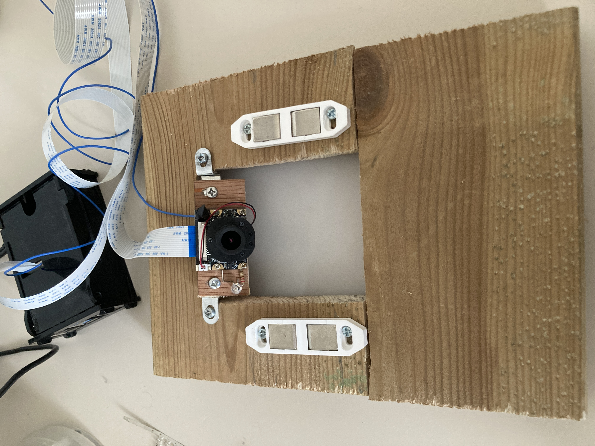
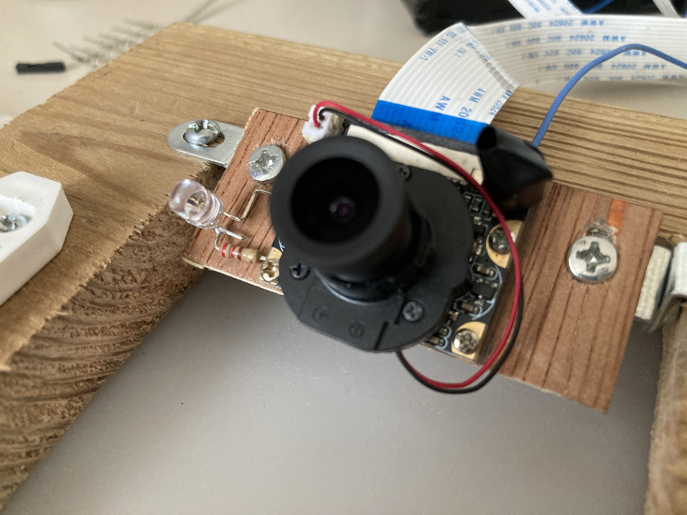
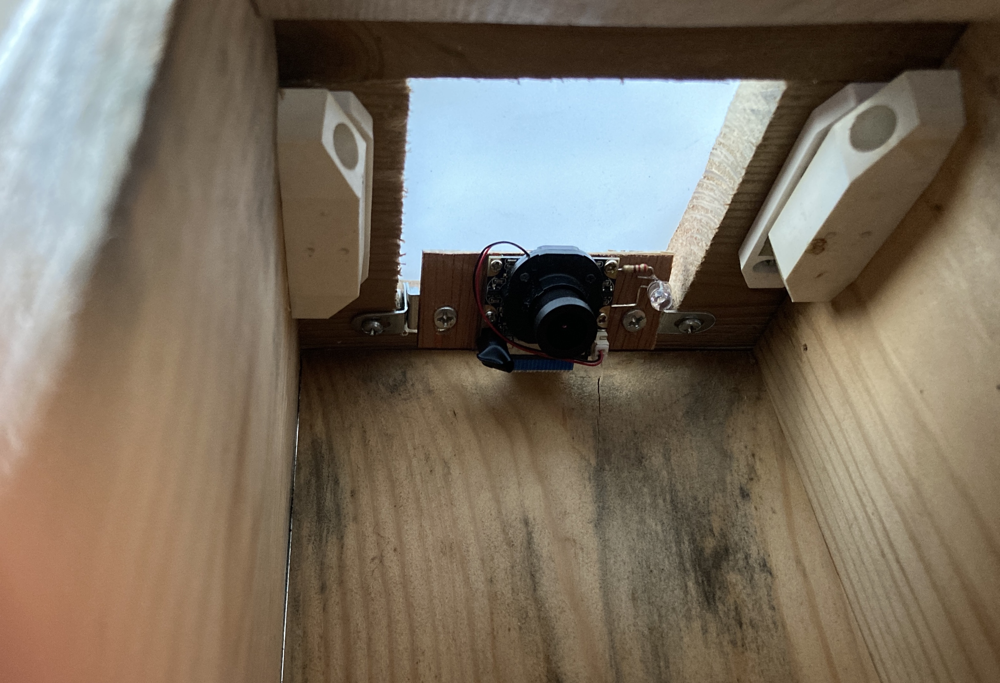
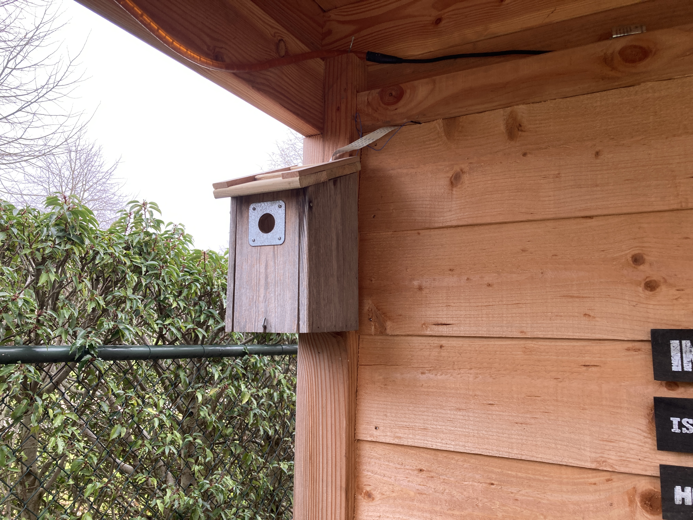
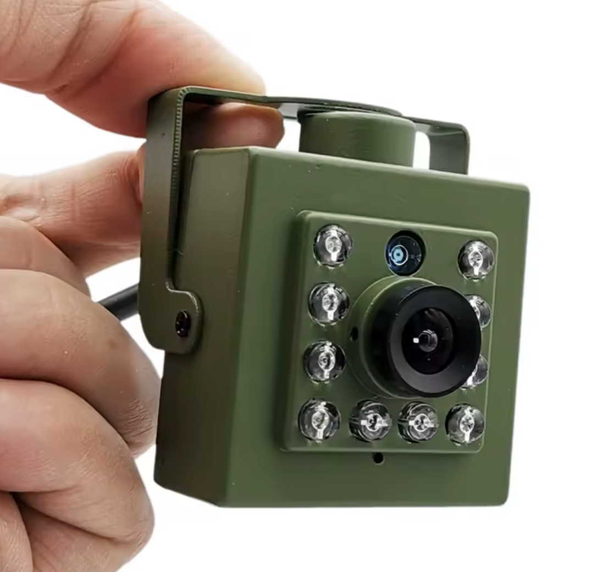

Birdhouse webcam project 4 (2026)
New hardware used
I made several improvements compared to last year:
- New camera: A Chinese clone of the RPi IR-CUT Camera
- Raspberry Pi 4 Model B (instead of 2B) with a large SD-card (128 GB)
- A new roof with window for the birdhouse.
- An IP Cam for the outside view.
IR-CUT camera
 The new camera has the same number of pixels (5M) as my previous camera, but a slightly higher field of view (95 degrees instead of 50). For a birdhouse this is of course very nice. The picture also seems to be a little clearer. The main advantage of this camera is the IR-cut feature. This means that there is a little motor inside the lens housing that can place an IR-filter in front of the sensor. With the IR-filter in place the camera is in the day mode. Without the IR-filter the CCD sensor is also sensitive to near infrared light. This makes the colors slightly distorted, but it allows to view in the "dark" when the scene is lit by infrared light.
Instead of the two IR lights that come with the camera, I soldered my own IR led to the 3,3V pads. See the picture below and project 1 for all the details.
The camera switches between day and night mode automatically based on the light that is captured by an LDR sensor. When I first tested the camera in the birdhouse, the picture from the camera was too dark. Apparently, the day/night switching point was not calibrated for the camera's sensitivity to light. The switching is done completely by hardware and there is no screw to calibrate the switching point. Therefore, I put some black electrical tape around the LDR housing and squeezed the adhesive sides at the top such that it creates a light funnel. By making the opening smaller (or wider) I could calibrate the IR-cut system such that it switches at the right moment.
 
Relying on tape to switch between day and night mode did not make me comfortable at all. This is why
I made a backup solution. Fortunately, the camera module has an extra connector through-hole that can be connected to
a RPi GPIO. When you set the GPIO to high (3,3V), it forces the night mode. When you set it to low (ground) it forces
the day mode. And by leaving the GPIO floating (input mode), you go back to the automatic switching.
In the picture below you can see the blue wire that I soldered to the through-hole.
Maybe worth noting, is that there is also the option to unplug the JST connector that comes from the IR-cut motor.
When doing this the filter will remain in its current state, either day or night mode.
Roof
The day mode only makes sense when there is sufficient light into the birdhouse. Therefore I cut out a 9 cm by 7 cm window in the roof and put a piece of a plastic milk can in front. See the pictures below.
     Raspberry Pi 4
The setup is the same as last year. In particular, it still needs a legacy Raspbian (Bullseye-v11-32b) when using the RPi-Cam-Web-Interface. I made some small modifications to it (see below). I now use a 128 GB SD card, such that it can now store probably more than 2 weeks of motion-detected video.
Software
For controlling the IR-cut I wrote three small python scripts (day/night/auto). They can be directly called from the RPi Cam Web Interface with buttons. You need to set the scripts to have to correct ownership and access rights to work via the web. More tricky is the fact that you need to grant access to the web-user to modify the GPIO pins:
sudo usermod -a -G gpio www-data
I also added the possibility to stream the live-feed to YouTube. So everybody is now able to see the live stream. I found the streaming command on the RPi Web Interface forum (link). The downside of this stream is that there is a 30 second delay and the quality is poor. You can find the changes I made to the software on my GitHub mirror page.
Outside camera
I tested another option for a birdhouse camera, which I found here. It's an IP camera in a nice green housing with many IR leds and an IR-cut lens. The main advantages are that it has audio, a larger field of view and a nice mobile app. The bad thing is that the camera is slightly more massive, that the desktop app and web interface are not so great and it is more cumbersome to go through all recordings. For this reason I now use this camera as the outside cam. Also worth noting is that this camera poses several security risks (link1, link2).

Videos on Youtube
You can watch the live feed and all highlights and compilations on my channel. At the moment (February 2026) there are no birds yet.